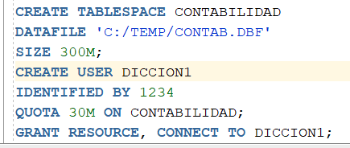
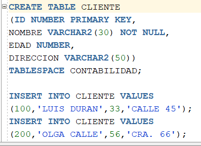
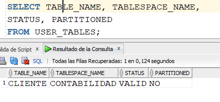
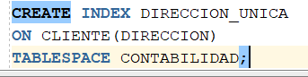
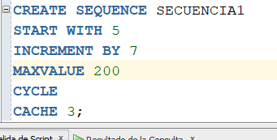
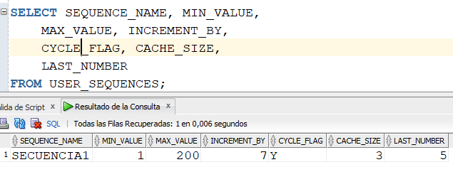
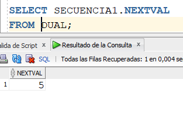
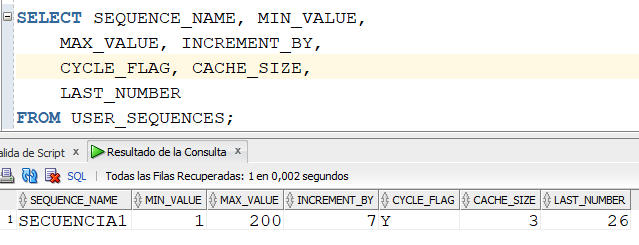

A continuación, vamos a hacer un ejercicio, paso a paso, para mirar algunas vistas del diccionario de datos.
Estando conectados como el usuario administrador, vamos a crear un nuevo tablespace llamado CONTABILIDAD y luego se creará el usuario llamado DICCION1 con su respectiva contraseña, y su quota permitida en dicho tablespace.
Consultando la vista DBA_USERS, vemos que ya aparece el usuario recién creado, con su estado, fecha de creación y fecha de expiración de su contraseña, entre otras cosas.
|  |  |
Estando conectados con el nuevo usuario, DICCION1, vamos a crear una tabla llamada CLIENTE. Y luego insertaremos 2 tuplas. Y luego consultemos USER_TABLES. Podemos mirar algunos metadatos de la tabla CLIENTE.
|  |  |
Ahora, a la tabla recién creada, creemos un índice. Y luego miremos los metadatos de los índices de este usuario. Como vemos, el usuario DICCION1 ya tiene dos índices: el recién creado y el de la clave primaria de la tabla CLIENTE.
|  |  |
Ahora creemos una secuencia. Y miremos los metadatos de dicha secuencia. Podemos mirar que todos los parámetros que se configuraron durante la creación de la secuencia, quedaron almacenados en la vista USER_SEQUENCES. Además, en LAST_NUMBER aparece el "próximo" consecutivo de la secuencia, en este caso 5 porque no se ha generado ningún consecutivo, y 5 es el valor inicial.
|  |  |
Miremos qué sucede con el campo LAST_NUMBER si generamos un primer consecutivo. Aparece en 26. Por qué?
|  |  |